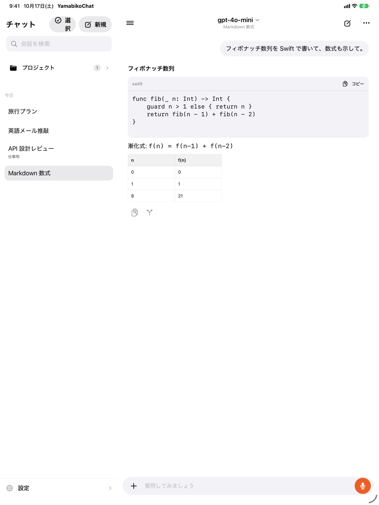

Keskustele yhden mallin kanssa
Striimaavat vastaukset Markdown-muotoilulla, koodikorostuksella, matematiikalla ja kuvaliitteillä. Muokkaa, luo uudelleen ja säilytä vastausvariantit.
Tuo oma tekoälysi · iPhone & iPad
YamabikoChat on ilmainen tekoälychat-sovellus iPhonelle ja iPadille. Yhdistä jo käyttämäsi tekoälypalvelut – API-avaimella tai tuetulla tilillä – ja chattaa yhden mallin kanssa, vertaa kahta mallia rinnakkain tai anna kahden mallin jutella keskenään.
Ilmainen ladata. Maksat tekoälypalveluntarjoajallesi suoraan käytöstäsi.


Lyhyesti
Tilat
Valitse kysymykseen sopiva tila, ei päinvastoin.
Striimaavat vastaukset Markdown-muotoilulla, koodikorostuksella, matematiikalla ja kuvaliitteillä. Muokkaa, luo uudelleen ja säilytä vastausvariantit.
Lähetä sama kehote kahdelle mallille ja lue molemmat vastaukset rinnakkain. Näin Dual toimii
Valitse kaksi mallia, aihe ja vuorojen määrä ja katso, kuinka ne väittelevät aiheesta keskenään.
Anna mallin siirtää osia pyynnöstä aliagenteille – kukin voi käyttää omaa malliaan – ja seuraa niiden edistymistä chatissa.
Ominaisuudet
Kirjoittaminen, tiivistelmät, kääntäminen, koodi ja matematiikka – sekä työkalut, joita oikea avustaja tarvitsee.

Kenelle
Oppaat
Lataa YamabikoChat iPhonelle ja iPadille.